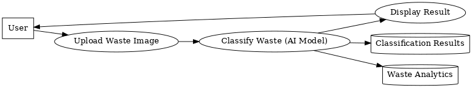
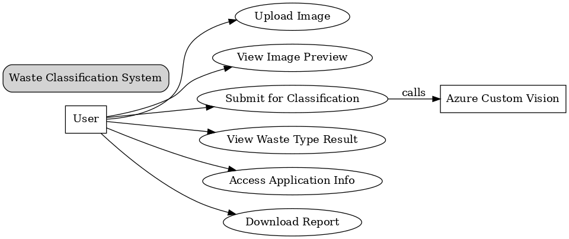
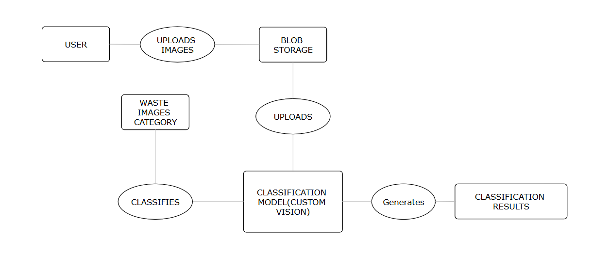

A breakdown of the architecture, components, and interactions in our Intelligent Waste Sorting System.
This diagram shows how data flows from the user's image input to the classification result via Azure AI services.
Describes how different users interact with the system, including uploading waste images and receiving classification results.
Outlines the relationship between entities: User, ImageData, ClassificationResults, Reports.
